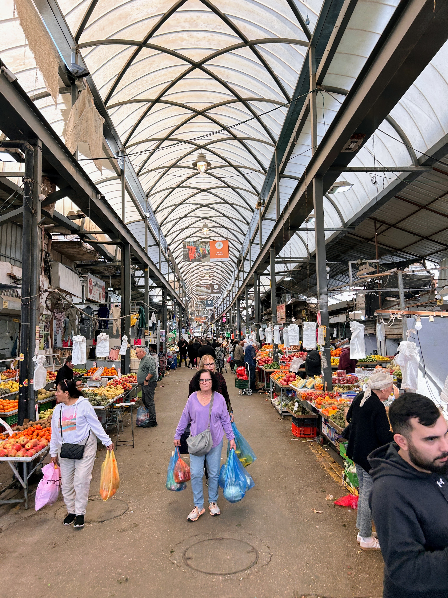

לחם יבש, קובה רותח ודונאט אמריקאי בלב הקרח החרדי
מאפיית נחמה עם תנור בן מאה שנה, הפטיליה של משפחת לוי שמבשלת 56 שנה בלי הפסקה, וקפה אמריקאי לאברכי ישיבת מיר — סיור בשכונה שמאחורי מאה שערים.
האזינו בכל מקום
פרקים אחרונים
לכל הפרקיםלחם יבש, קובה רותח ודונאט אמריקאי בלב הקרח החרדי
מאפיית נחמה עם תנור בן מאה שנה, הפטיליה של משפחת לוי שמבשלת 56 שנה בלי הפסקה, וקפה אמריקאי לאברכי ישיבת מיר — סיור בשכונה שמאחורי מאה שערים.
פיוז'ן, פרנה וחם חם — מסע טעמים בבית שאן
מסעדת פיוז'ן שלא ציפיתם למצוא בפריפריה, סטקייה ותיקה עם לחם בית שגורם לך לקנות הביתה, וחם חם ביתי שלא תמצאו בשום חנות.
צ'ונט, קוגל ועשרת אלפים חלות — ליל חמישי בבני ברק
מעדניית אוכל יהודי של שלושה דורות, קיוסק שמגיש צ'ונט מסיר ענק, ומפעל חלות שמייצר עשרת אלפים חלות בשבוע — סיור בדיזנגוף של בני ברק.
לחם, גבינה ופטל — שוק האיכרים הראשון של תל אביב
אופה שמגדל את הקמח שלו, מחלבה בוטיקית עם שלוש מדליות מהמונדיאל בצרפת, וחקלאי פטל שעזב את הכלכלה — סיור בשוק האיכרים בשוק הפשפשים ביפו.
ערק, טבעוני ופיתות בלי מזלג — ירושלים הליברלית שלא הכרתם
בית קפה ליברלי שהוקם על ידי הומו מוצהר בשכונת נחלת שבעה, מתחם תרבות עם אוכל טבעוני בלב העיר, ופיתות מפורקות בשוק מחנה יהודה — סיור בצד הפחות מוכר של ירושלים.
סנדוויץ' סבתא, תרום כפי יכולתך
בודקה קטנה בשכונת קריית מנחם בירושלים שמאכילה מאתיים אנשים ביום בשיטת שלם-כמה-שתרצה — סיפור על חסד, לחמניות ומקום שעושה את העולם קצת יותר טוב.
הקפה שגדל בשפלה — עשר שנים של חלום ישראלי
דקלה פוקס ואביה מגדלים קפה כחול-לבן במושב גני טל שבשפלה. בין שיחים של עשר שנים, תנור קלייה ובית קפה קטן — הסיפור של מי שמסרב לוותר על החלום.
מקלובה, לוטניצה ואחד עשרה שנה על השדרה
מסעדה ערבית ביתית עם מקלובה שנהפכת מול העיניים, מעדנייה בולגרית בת ארבעים שנה, ומעדנייה חדשה עם ליקר ארטישוק — סדרות ירושלים ביפו.

שלוש תחנות בשוק רמלה
חומוס של משפחה נוצרית, דוסה הודית שדורשת 13 שעות הכנה, ומאמולים שמכינה אמא בת 94 — סיור בשוק שמסרב להתגנטרפי.
חומוס, דוסה ומאמולים בשוק רמלה
חומוס של משפחה נוצרית שפתוח בשבת, דוסה שדורשת 13 שעות הכנה ממסעדה הודית זעירה, ומאמולי מסולת שמכינה אמא בת 94 — שוק שמסרב להתגנטרפי.
מרק כבש בפסאז', צ'ודו תג'יקי ובלינצ'קים של סבתא — סיור בבת ים
מסעדה תימנית כשרה בדצ בתוך פסאז', מאפייה תג'יקית שמוכרת ממתקי ענבים, ומסעדה רוסית שהחזירה אותי 30 שנה אחורה.
קפה, נמל ושפיות ברחוב סירקין
קולה קפה בשוק תלפיות בחיפה — בניין שהיה בית קברות הפך למוקד של יצירה, ובעל קפה חיפאי מסביר למה העיר הזאת שפויה.
מאפה שמיר, טיילת חדשה ונקניקייה דנית — סיור בבת גלים
מאפייה של עורכת דין ואיש שיווק שעשו שיפט, טיילת שמחברת סוף סוף את חיפה לים, ונקניקיות בסגנון קופנהגן — בת גלים פורחת.
קפה, אוגד לט ומכתש בקצה העולם
שתי בנות, אחת מכפר עזה, פתחו בית קפה במצפה רמון כי לא היה להן איפה לשתות קפה — ויצרו מקום שמקהיל קהילה שלמה על שפת המכתש.
קרואסון צרפתי, ירקן שהוא פסיכולוג ושלגון בוקר — סיור בבקעה
קונדיטור פרפקציוניסט שפתח קיוסק בשכונה, ירקן שמכיר כל לקוח כבר 45 שנה, וגלידת בוטיק עם 40 אחוז פחות סוכר — בוקר בבקעה.
קלצונס, דגים בחלה ועוגת קולנוע: טבריה של פעם
קונדיטוריה הונגרית משנות ה-67, קציצות דגים בחלה בשוק, וקלצונס שמכינים רק בשבועות — סיור בעיר שנשארה בבואה של עצמה.
דבש מהכוורת להרי יהודה
דבוראי קטן מנטף שמייצר כמה טונות דבש בשנה, לא מחמם ולא מסנן — וטוען שמי שטעם דבש אמיתי לא יחזור לסופר.
אסאדו בפרנה, מפרום של יודיצ'ה וטקס בונה — סיור באשקלון
מסעדת בשר שנפתחה יום אחרי השבעה באוקטובר, מפרום של אם טריפוליטאית וטוניסאית, וטקס קפה אתיופי על המדרחוב — אשקלון מתעקשת.
חומוס בלקני, סביצ'ה ועטריות אורז בשוק הכרמל
חומוס דור רביעי שמעז לחטוא עם קארי וקוקוס, דייג שמאמין שדגים זה אמונה וסבלנות, ומסעדת תאילנד שלא מתחנפת לחך הישראלי — שלוש תחנות בשוק שנושם את השטח שבו הוא נמצא.
פחזניה צרפתית, קישואים עם טוטים והמבורגר של שף צעיר — סיור באשדוד
קונדיטוריה שכונתית עם כשרות וטעם של פריז, פטיסרי חדש של בת 24 על הים, והמבורגר בפריפריה שמעדיף קציצה בלי איפור.
בוריקה, קוסקוס ומדלן בשוק נתניה
בוריקה תוניסאית מטוגנת בשמן צלול כאגם, קוסקוס טריפוליטאי עברי עם מפרום בצבע אדום שלא ראיתם, ומאפייה צרפתית-אלג'יראית שכולה שקדים — השוק שעדיין לא התפוצץ.
סינבון של חיבוק, שקשוקה ארגנטינאית וגלידה שמנצחת — סיור בערד
אמריקאית שטסה לקוריאה ללמוד קפה, אחים ארגנטינאים שמחזיקים מסעדה 46 שנה, ופיצה נפוליטנית בלב הקניון — ערד מפתיעה.
לחם, קרפלאך ווויסקי בסמטאות צפת
מאפיית מחמצת של ירושלמי חרדי, מסעדת שף שמחברת בין הקנידלאך של סבתא לפיוז'ן מודרני, ומזקקה שמתחבאת מעל מרתף בן 400 שנה — סיור בעיר שהישראלים שכחו.
קהילה, קבב ופיצה ביער: פרדס חנה מבפנים
בית קפה שהוא אי של שפיות, דוכן קבב שהתחיל בחצר הבית בקורונה, ופיצה של מורה לעץ בפריקאסט ביער — סיור בעיר שאנשים באים אליה כדי להיות, לא לבקר.
אוכל שמי, דגים מהחכה וכנאפה מגולגלת — סיור בעכו העתיקה
מטבח של אישה אחת שמסרבת לתת למוסד להיסגר, דייג דור חמישי שפתח חמרה בשוק, וכנאפה שלא דומה לשום כנאפה שטעמתם.
בריקא, סביך ועובדת קוסקוס: נתיבות מבפנים
בריקא שהיא מטרנה מקומית, סביך שנולד דווקא במלחמה, וקוסקוס עבודת יד עם אסאדו — סיור בעיר שמסרבת להישבר.
שלוש עצירות בכביש 65
מסעדה ביתית בחצר באום אל-פחם, כיכוכים טבעוניים מושחתים בקציר, ומסעדת שף ערבית-איטלקית בערערה — מסע קולינרי לאורך ואדי ערה שמוכיח שיש הרבה מעבר לחומוס ופלאפל.
נקניקייה, פיצה מעושנת וקינוח שמביא לבכי — סיור בעפולה
קיוסק של 45 שנה שפתוח 24 שעות, פיצה עם אסאדו בשוק המתחדש, ופטיסרי באזור תעשייה שמגיש עוגיות ברמה של שנקין.
קפה, אינג'רה ושוקולד: רחובות מפתיעה
בית קפה שנפתח יום אחרי שבעה באוקטובר, מסעדה אתיופית שההורים התפטרו בשבילה, ושוקולטריה שמטפלת בבריאות הנפש — סיור במרכז ההיסטורי של רחובות.
נצרת בלי כנאפה: טעמים של עיר שמסרבת לוותר
לילות בירות בקפה בוטיק, לאפה ממולאת באולש במאפייה עתיקה, ושישברק במסעדת פיוז'ן — סיור בעיר שהפוטנציאל שלה גדול מהמציאות.
גזוז, בורקס ורוח של פעם בשוק לווינסקי
בורקס של דור שלישי, גזוז עברי שמתיישן חמש שנים בבקבוק, ומסעדת פועלים תימנית עם אלמנט היפסטרי — סיור בשוק שהפך למדרחוב.
לחמקה חוזרת הביתה
מאפייה צפונית שנפתחה מחדש אחרי שנתיים של פינוי, אישה אחד שאופה הכל מאפס, ומחסור בעובדים שמזכיר שהגליל עוד לא עומד על הרגליים.
דבש דותיה: יום קטיף עם מוטי אלמוז
מנגו שנקטף לפני עשרים דקות, חקלאי שעזב את צה"ל בתשע בערב וחזר לטרקטור בחמש בבוקר, ונוער שמעדיף שדות על מסכים.